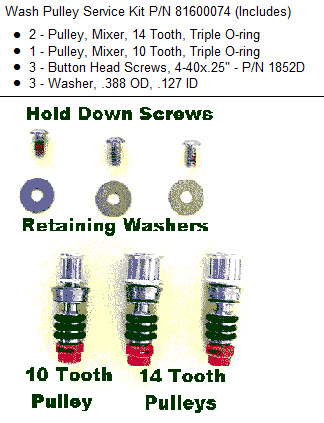

This procedure describes how to install the 10-tooth and 14-tooth triple o-ring mixer pulley assemblies in the analytical module.
Required Materials:
Wash Pulley Service Kit (P/N 81600074)

Systems that have mixing problems can exhibit these symptoms:
- Erratic system check results.
- Erratic assay results or outliers.
Note: If the bearings are exposed to system chemicals from spills or overflow in the wash carousel, the bearings can become noisy, vibrate, freeze, and cause poor or no mixing.
-
Power off the instrument.
-
Remove the analytical module.
-
Remove the mixer belt.
-
Depress the belt tensioner arm, and slip the mixer belt from the center mixer pulley.
-
Remove the mixer belt from the remaining mixer pulleys.
-
Remove the mixer pulleys.
-
Loosen and then remove the mixer pulley screws and retaining washers at each of the three mixer pulley locations.
-
Remove the pulleys by lifting upward on each assembly.
-
Discard the pulleys.
Note: If using the Wash Pulley Service Kit P/N 81600074, the screws and retaining washers can be discarded.
-
Clean the mixer pulley areas of the analytical module with de-ionized water and swab applicators. Remove any contamination or corrosion buildup.
-
Install the triple o-ring mixer pulleys.
Caution: Use the washers from the service kit to secure the mixer pulleys. The original washers are not the correct size.
-
Insert the new 10-tooth mixer pulley into the position closest to the substrate location. Secure the pulley with a washer and screw.
-
Insert the new 14-tooth mixer pulleys close to the dispense 2 and 3 locations. Secure each pulley with a washer and screw.
-
Reinstall the mixer belt.
-
Reinstall the analytical module.
-
Power on the instrument.
-
Verify that the mixer pulleys are operating properly.
-
Measure and adjust the mixer motor speed.
-
Verify system operation.
-
Perform the required system verification.
-
Contact your local support organization with any questions or concerns.